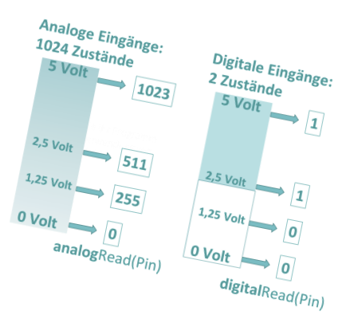
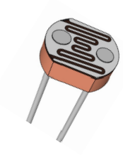
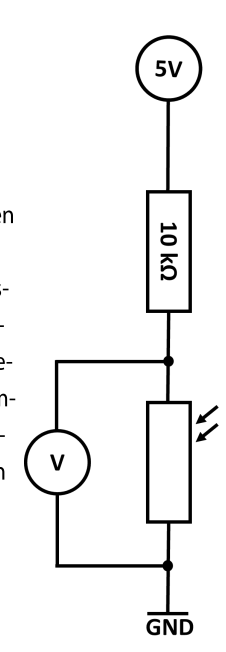
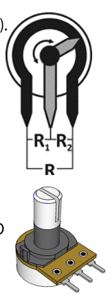

Ein Taster kennt zwei Zustände. Ein Sensor liefert viele Messwerte.
Mit digitalRead() hast du bisher zwischen 0 und 1 unterschieden. Jetzt liest du mit analogRead() Spannungen am analogen Eingang ein und speicherst das Ergebnis als Zahl von 0 bis 1023.

Das Arduino Uno ordnet dem Spannungsbereich von ungefähr 0 V bis 5 V insgesamt 1024 mögliche Zahlenwerte zu.
Digital oder analog?
Digitaler Eingang
Er unterscheidet zwei Bereiche und liefert LOW / 0 oder HIGH / 1.
Analoger Eingang
Er wandelt eine Spannung in eine Zahl um: ungefähr 0 V ergibt 0, 2,5 V ergibt etwa 511 und 5 V ergibt 1023.
Merke: „Analog“ bedeutet hier nicht, dass im Arduino eine Kommazahl ankommt. Der Analog-Digital-Wandler erzeugt einen ganzzahligen Messwert.
Ein Messwert muss gespeichert werden, bevor du ihn weiterverwendest
Der Ausdruck analogRead(sensor) führt genau in diesem Moment eine Messung aus und liefert eine Zahl zurück. Ohne Zuweisung wäre diese Zahl nach dem Ende der Anweisung nicht unter einem eigenen Namen verfügbar. Deshalb landet sie in der Variable messwert.
int sensor = A0;
int messwert;
messwert = analogRead(sensor);
Serial.println(messwert);
1. SpannungAm Pin A0 liegt eine Spannung an.
2. WandlunganalogRead(sensor) erzeugt eine Zahl.
3. Speicherungmesswert = ... merkt sich diese Zahl.
4. VerwendungAusgeben, vergleichen oder umrechnen.
sensor
speichert, wo gemessen wird: am Pin A0. Ändert sich später der Anschluss, musst du nur diese eine Stelle anpassen.
messwert
speichert, was bei der letzten Messung herauskam. Alle folgenden Anweisungen arbeiten dadurch mit demselben Wert.
Warum nicht mehrfach analogRead(sensor) aufrufen? Ein Sensor kann sich zwischen zwei Aufrufen verändern. Wenn Ausgabe, Spannungsberechnung und Entscheidung zusammengehören sollen, liest du einmal und verwendest anschließend mehrfach dieselbe gespeicherte Variable.
Jetzt hast du gelernt: Eine Variable ist ein benannter Speicherplatz. Sie sorgt dafür, dass mehrere spätere Anweisungen denselben gemessenen Zustand verwenden.
Simulation: Beobachte, wann der Messwert wirklich gespeichert wird
Verändere zuerst die Spannung am Regler. Gehe dann schrittweise durch den Code. Erst wenn die gelbe Markierung auf analogRead(sensor) steht, wird die aktuelle Spannung gewandelt und in messwert gespeichert.
A0 messen, speichern, ausgeben und entscheiden
2,50 VSpannung an A0
Bereit: Der Pin ist benannt, aber noch nicht gemessen.
int sensor = A0;
int messwert;
void setup(){ Serial.begin(9600);
pinMode(13, OUTPUT); }
void loop(){ messwert = analogRead(sensor);
Serial.println(messwert);
if(messwert > 500){
digitalWrite(13, HIGH);
}else{
digitalWrite(13, LOW); }
delay(500); }
sensorA0
messwertnicht festgelegt
Bedingungnoch nicht geprüft
serieller Monitornoch keine Ausgabe
Probiere es aus: Ändere den Regler direkt nach der Messzeile. Die Anzeige „Spannung an A0“ ändert sich sofort, aber messwert bleibt gleich, bis analogRead() im nächsten Schleifendurchlauf erneut ausgeführt wird.
Vom ADC-Rohwert zur Spannung
Der Messwert 511 bedeutet nicht 511 Volt. Er beschreibt die Position innerhalb der Skala von 0 bis 1023. Für eine näherungsweise Spannung rechnest du den Anteil des Messwerts auf den Bereich bis 5 V um.
Eine Spannung kann Nachkommastellen haben, zum Beispiel 2,50 V. Der Typ float kann solche Werte speichern.
Warum 5.0 und 1023.0?
Die Dezimalpunkte erzwingen eine Rechnung mit Kommazahlen. Reine Ganzzahldivision würde Zwischenwerte abschneiden.
Messgrenze: Beim üblichen Arduino Uno darf die Spannung am Analogeingang nicht negativ und nicht größer als die verwendete Referenzspannung sein. Eine Überspannung kann den Mikrocontroller beschädigen.
Der Arduino misst Spannung, nicht direkt Licht oder Temperatur
Viele Sensoren verändern ihren elektrischen Widerstand. Damit daraus eine messbare Spannung wird, baust du einen Spannungsteiler. Beim LDR verändert Licht den Widerstand; dadurch verändert sich die Spannung am Verbindungspunkt und damit der Wert an A0.

Ein LDR verändert seinen Widerstand abhängig von der Beleuchtung.

Der Spannungsteiler macht die Widerstandsänderung als Spannung messbar.
Signalweg
Licht verändert den LDR. Der veränderte Widerstand verschiebt die Teilspannung. A0 misst diese Spannung. analogRead(A0) wandelt sie in eine Zahl.
Richtung prüfen: Ob der ADC-Wert bei mehr Licht steigt oder fällt, hängt davon ab, an welcher Stelle LDR und Festwiderstand im Spannungsteiler sitzen. Teste deshalb zuerst helle und dunkle Extremwerte.
Ziehe einen Begriff auf die passende Beschreibung.
Begriff
LDR
Spannungsteiler
A0
analogRead(A0)
messwert
Funktion
verändert seinen Widerstand bei anderer Beleuchtung
wandelt eine Widerstandsänderung in eine veränderte Teilspannung um
ist der Anschluss für die zu messende Spannung
startet die Wandlung und liefert einen ADC-Wert
speichert das Ergebnis für Ausgabe, Rechnung und Entscheidung
Verbundene Paare
Aus dem gespeicherten Messwert wird eine Entscheidung
Für einen Dämmerungsschalter liest du zuerst den Sensor, speicherst den Wert und vergleichst anschließend genau diese Variable mit einem Grenzwert. Beim gezeigten Spannungsteiler bedeutet ein größerer ADC-Wert: Es ist dunkler.
helligkeit = analogRead(ldr); überschreibt die Variable einmal pro Durchlauf mit dem aktuellen Rohwert.
Entscheidung
if(helligkeit > 500) prüft den gespeicherten Wert. Der Sensor wird in dieser Zeile nicht erneut gelesen.
Jetzt hast du gelernt: Die Variable trennt den Messzeitpunkt von der Verarbeitung. Ausgabe und if/else verwenden beide denselben gespeicherten Wert.
Ein Potentiometer ist ein einstellbarer Spannungsteiler
Beim Potentiometer teilt der Schleifer den Gesamtwiderstand in zwei Teilwiderstände. Drehst du am Knopf, verändert sich die Spannung am mittleren Anschluss. Diese Spannung kannst du an A0 messen und zum Beispiel direkt als Wartezeit verwenden.

Die beiden äußeren Anschlüsse liegen an 5 V und GND; der mittlere Anschluss liefert die veränderliche Teilspannung.
Schaltungshinweis: Der mittlere Anschluss darf als Spannungsteiler-Ausgang nicht direkt mit 5 V oder GND kurzgeschlossen werden.
Der ADC-Wert wird hier zur Zeit in Millisekunden. Ein kleiner Wert erzeugt schnelles Blinken, ein großer Wert langsames Blinken. Für nachvollziehbares Verhalten ist es oft besser, auch hier einmal zu messen und denselben Wert für beide Pausen zu speichern.
int pause = analogRead(A0);
digitalWrite(13, HIGH);
delay(pause);
digitalWrite(13, LOW);
delay(pause);
Transfer: Aus einer Messung werden drei Spannungsbereiche
Ein Batterietester soll eine Spannung messen und mit drei LEDs bewerten: Grün ab 1,4 V, Gelb von 1,2 V bis unter 1,4 V und Rot unter 1,2 V. Dafür speicherst du zuerst Rohwert und berechnete Spannung.
int messwert = analogRead(A0);
float spannung = messwert * (5.0 / 1023.0);
if(spannung >= 1.4){
// grüne LED
}else if(spannung >= 1.2){
// gelbe LED
}else{
// rote LED
}
Warum else if? Die Bereiche schließen sich gegenseitig aus. Sobald ein passender Zweig gefunden wurde, werden die folgenden Zweige übersprungen. Bei drei einzelnen if-Abfragen müsstest du Überschneidungen besonders sorgfältig vermeiden.
Sicherheit: Miss nur Spannungen, die sicher innerhalb des zulässigen Eingangsbereichs liegen. Zwei 1,5-V-Zellen in Reihe ergeben ungefähr 3 V und sind damit für diese Übung geeignet; unbekannte oder höhere Spannungsquellen gehören nicht direkt an A0.
Mit analogRead(Pin) erzeugst du einen ADC-Rohwert.
2. Speichern
Eine Variable hält den Wert für alle folgenden Verarbeitungsschritte fest.
3. Verwenden
Du kannst den Wert ausgeben, umrechnen, vergleichen oder als Zeit einsetzen.
Jetzt hast du das gelernt: Du kannst digitale und analoge Eingänge unterscheiden, einen Messwert speichern, in eine Spannung umrechnen und Sensorwerte für Entscheidungen oder Steuerungen nutzen.